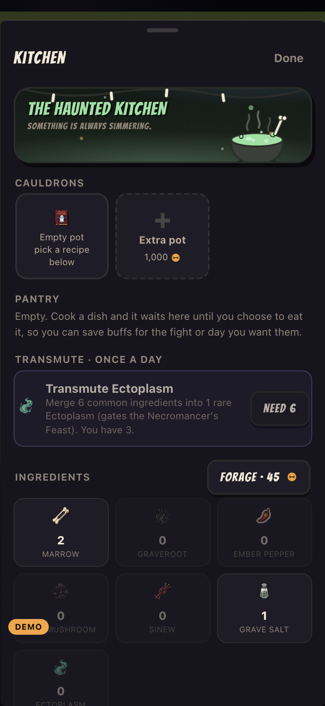
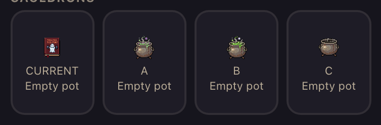
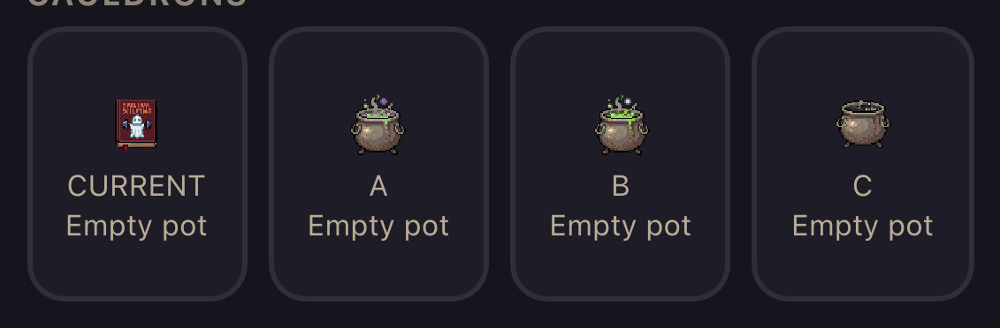
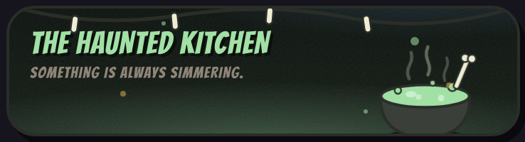
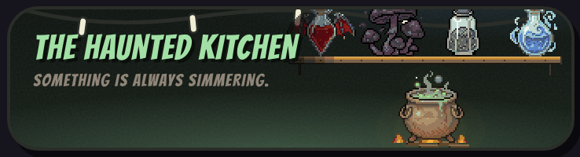
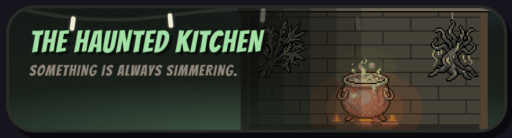
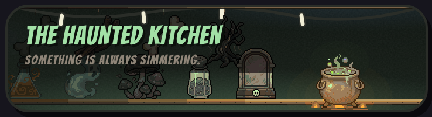

Feedback item 3, verbatim: “swap the cookbook icon to a cauldron in the kitchen it doesnt currently read as a cauldron at all and find a way to make the haunted kitchen banner look cooler with the use of pixel art - mock this up”.
Nothing here is wired into the app. These are candidates. Every image below is a real screenshot of the real Kitchen sheet at 393×852, not a contact sheet of loose PNGs.
The Kitchen’s pot grid sits under a header that literally reads CAULDRONS, and the card under it draws
a red cookbook. That is pixCur('recipe', 26) in js/app.js:6526, which resolves to
assets/icons-pix/recipe.png at 24 CSS px (pixCur snaps 26 down to a whole step of 48).

assets/icons-pix/kitchen.png is a 48×48
three-legged cauldron, already drawn, already keyed in PIX_CUR, already in the service worker
PRECACHE list. It draws the Kitchen door button on Today. Candidate A is that file and nothing else, so it costs
zero new bytes.All three are Tom’s own kitchen.png. B and C are per-pixel recolours and integer translations
of it. Nothing is scaled, so the pixel grid is intact.


| Candidate | Rendered ink | Box fill | Peak contrast on the card |
Colours in @48 | Colours out @24 rendered | Ink centroid vs box centre |
|---|---|---|---|---|---|---|
| CURRENT cookbook | 16×19 CSS | 17.3% | 16.8:1 | 49 | 34 | — |
| A — as shipped | 20×22 CSS | 35.0% | 15.0:1 | 56 | 48 | 50.0% / 56.7% |
| B — lit brew | 20×22 CSS | 35.3% | 15.3:1 | 51 | 44 | 50.0% / 56.7% |
| C — cold pot | 20×18 CSS | 30.6% | 12.2:1 | 46 | 37 | 49.9% / 48.6% |
Colours out is never higher than colours in. That is the crunch test, and it says the 24 px problem is not resampling: the browser is dropping colours, not inventing them. So the fix is subject and contrast, not resolution. All three cauldrons carry roughly twice the ink of the cookbook in the same 24 px box.
C is the only one centred in its box (49.9% / 48.6% against a 50% / 50% target). A and B sit 6.7% low because the steam column above the pot pushes the mass down. If the glyph-centring lint being written for the lightning bolt is extended past circular badges, C passes it as drawn and A and B sit marginal.
A — as shipped. pixCur('recipe', 26) becomes pixCur('kitchen', 26). One
identifier. No new asset, no new PRECACHE line, nothing to review. The honest downside: the brew is a four-row band
of green and muddy purple, which at 24 px is speckle rather than liquid.
B — lit brew. A’s pixels with one change: the pool goes onto the app’s own
--accent #a5e847 ramp and the purple inside the pool joins it, so the brew is one hue. Only the
floating cube stays violet, because it is the one purple shape big enough to survive the size. Iron, handles, legs
and rim are Tom’s pixels untouched.
C — cold pot. The card says Empty pot, so this one is empty: no brew, no steam, no floating bits, cold iron interior. Losing the steam column frees the top third of the frame, which is what lets the pot centre in its box. Quietest of the three, and the lowest contrast at 12.2:1.
The band is .marquee, 361×92 CSS px at a 393 viewport. Today it is an inline SVG the
app.css comment already calls “a PLACEHOLDER I drew to prove the concept”. Every concept below is
right-anchored so it never stretches at any banner width, and every object in them is an existing 48×48
icons-pix drawing pasted at 1:1.




| Concept | Dimensions | Decoded (w×h×4) | Colours | Subtitle contrast |
|---|---|---|---|---|
| Today (vector placeholder) | — | 0 | — | 4.66:1 |
| 1. Shelf corner | 186×92 | 66.8 KB | 142 | 4.66:1 |
| 2. Hearth | 206×92 | 74.0 KB | 90 | 4.71:1 |
| 3. Full-bleed pantry | 430×92 | 154.5 KB | 206 | 4.78:1 |
For scale: one 48×48 icon is 9 KB decoded, and the screen that recently carried 100 MB was carrying about 1,300× the largest of these. All three are noise. Subtitle contrast is measured off the render against the darker 70% of the strip behind it; all three match or beat what ships today, because each carries a baked stepped scrim under the type.
The firelight is stepped into four bands, not a smooth falloff. The first cut used a continuous ramp and put 5,059 unique colours in one 430 px band, against 25 to 57 in each shipped icon; a smooth gradient beside hard pixel edges reads as a JPEG artefact. Each canvas is then quantised to 56 colours with dither off. Every object is bottom-aligned by its ink bbox, never its 48 px frame, because those frames carry different amounts of transparent padding and aligning by the frame is what makes a shelf of props look like props floating near a stick.
Palette is sampled, not eyeballed: wood from crate.png, stone from tombstone.png, fire
from ember.png, iron and brew from kitchen.png, plus the app.css tokens
--accent, --mint, --gold and --violet.